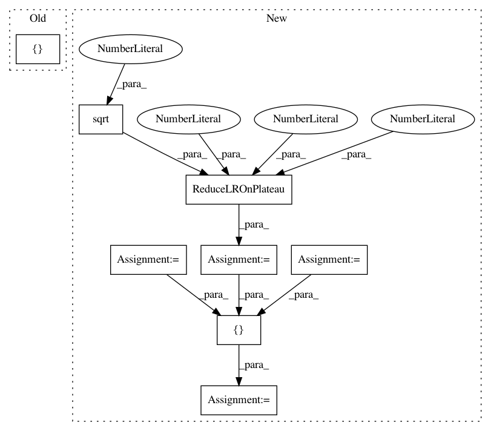

b5e906b0b31d0de66caa51e4ae3bbad93303d1f5,cifar100.py,,,#,4
Before Change
// print("Model loaded.")
model.fit_generator(generator.flow(trainX, Y_train, batch_size=batch_size), samples_per_epoch=len(trainX), nb_epoch=nb_epoch,
callbacks=[ModelCheckpoint("weights/DenseNet-BC-100-12-CIFAR100.h5", monitor="val_acc", save_best_only=True,
save_weights_only=True)],
validation_data=(testX, Y_test),
nb_val_samples=testX.shape[0], verbose=2)
After Change
// model.load_weights("weights/DenseNet-BC-100-12-CIFAR100.h5")
// print("Model loaded.")
lr_reducer = ReduceLROnPlateau(monitor="val_loss", factor=np.sqrt(0.1),
cooldown=0, patience=10, min_lr=0.5e-6)
early_stopper = EarlyStopping(monitor="val_acc", min_delta=0.0001, patience=20)
model_checkpoint= ModelCheckpoint("weights/DenseNet-BC-100-12-CIFAR100.h5", monitor="val_acc", save_best_only=True,
save_weights_only=True)
callbacks=[lr_reducer, early_stopper, model_checkpoint]
model.fit_generator(generator.flow(trainX, Y_train, batch_size=batch_size), samples_per_epoch=len(trainX), nb_epoch=nb_epoch,
callbacks=callbacks,
In pattern: SUPERPATTERN
Frequency: 3
Non-data size: 8
Instances
Project Name: titu1994/DenseNet
Commit Name: b5e906b0b31d0de66caa51e4ae3bbad93303d1f5
Time: 2017-04-25
Author: titu1994@gmail.com
File Name: cifar100.py
Class Name:
Method Name:
Project Name: keras-team/autokeras
Commit Name: c99295e1903952b3b806c4fd641e28f852b17c36
Time: 2018-04-18
Author: jhfjhfj1@gmail.com
File Name: autokeras/utils.py
Class Name: ModelTrainer
Method Name: train_model